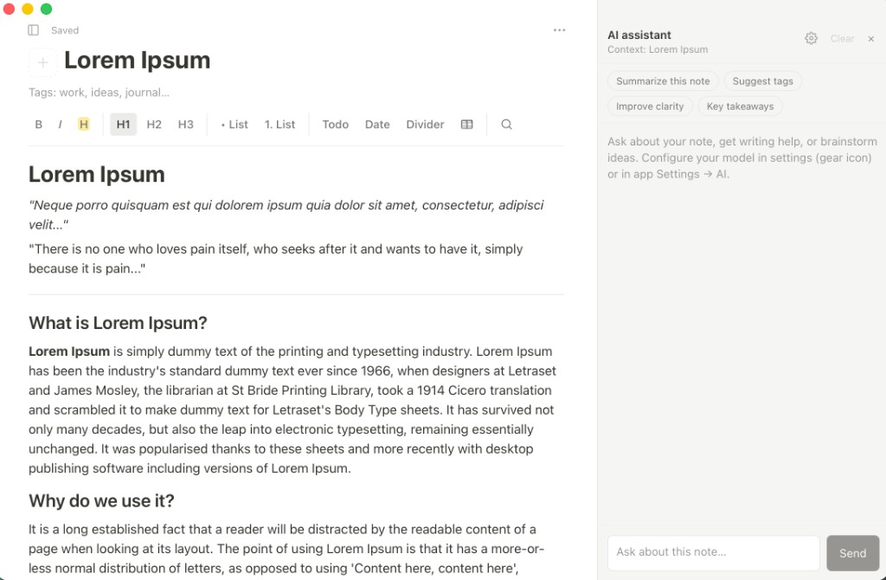

Local-first notes for macOS — rich editing, folders, and an optional AI assistant. Everything stays on your Mac in SQLite. No account, no sync, no cloud.

Slatepad feels like a modern notes app — clean sidebar, distraction-free editor, keyboard shortcuts — but your data never leaves your machine unless you export it.
Group notes in folders, pin important ones, and sort by modified date or title.
⌘K quick switcher searches titles, tags, and full note content.
Start from blank, daily tasks, or meeting notes templates.
Soft-delete to archive, export/import a full .db backup from Settings.
/ slash menu and bubble formatting toolbar⌘F), copy as Markdown, export PDF
Open the right-side AI panel with ⌘⇧A. Slatepad sends your
currently open note as context — summarize, suggest tags, improve clarity, or ask anything.
Connect Ollama, LiteLLM, or any OpenAI-compatible API. API keys stay in local settings.
Verify URL, key, and model before chatting. Clear errors when the server is down.
Rendered markdown replies with Copy and Apply — push AI suggestions into your editor.
Setup guide: scripts/AI.md
brew tap yasharma/tap
brew install --cask slatepad
xattr -dr com.apple.quarantine /Applications/Slatepad.app
open /Applications/Slatepad.app
The xattr step is a one-time Gatekeeper bypass for unsigned builds.
See the README for DMG installs and upgrades.